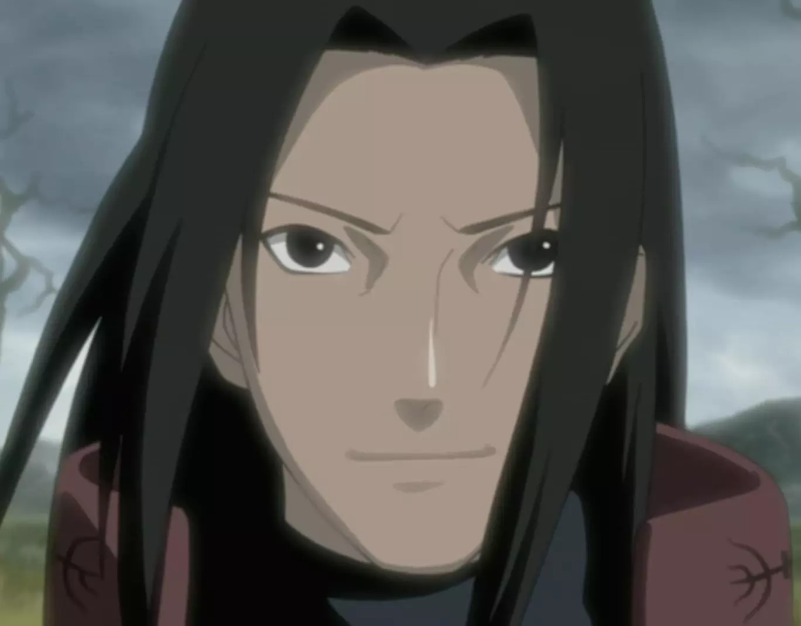

 Хаширама Сенджу (яп. 千手柱間, Сэнджю Хащирама) был членом прославленного клана Сенджу. Он был назван Богом Шиноби за непревзойдённые способности ниндзя. Хаширама стремился к спокойствию в мире шиноби и для достижения этой цели основал Скрытый Лист вместе с членами своего клана и другом детства и соперником Мадарой Учихой и кланом Учиха. Позднее он стал Первым Хокаге Деревни Скрытого Листа. Несмотря на то, что он был не в состоянии достичь мира при жизни, его наследие и видение мира продолжили формировать не только деревню, но даже целый мир шиноби после его смерти.